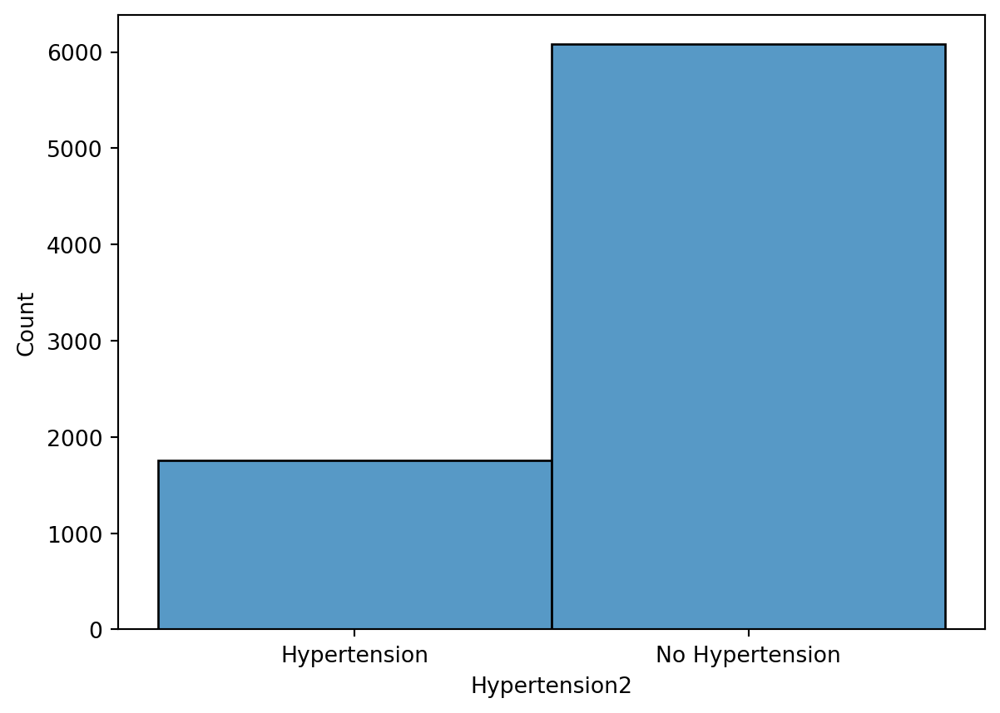
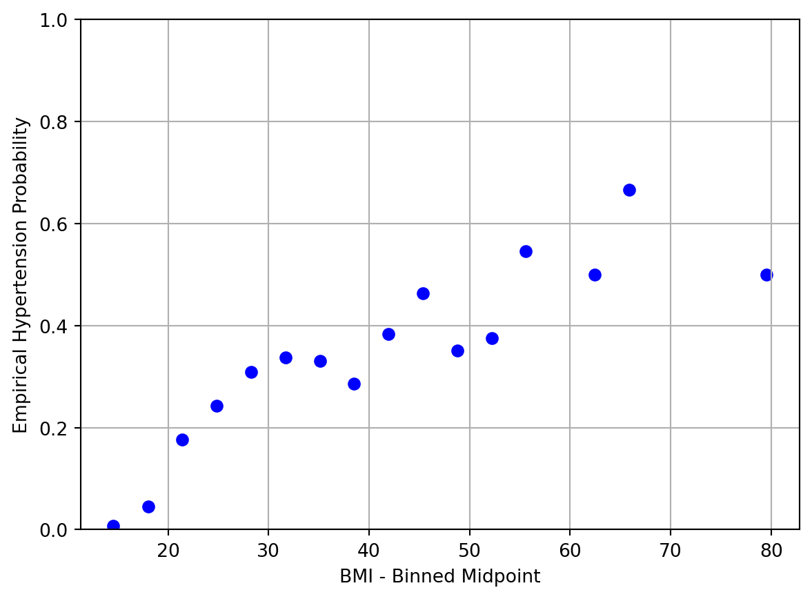
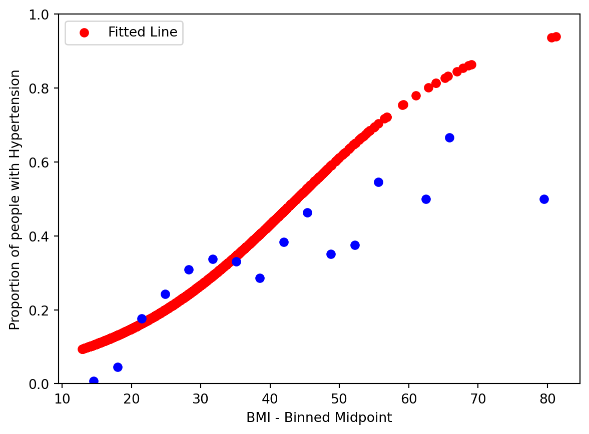
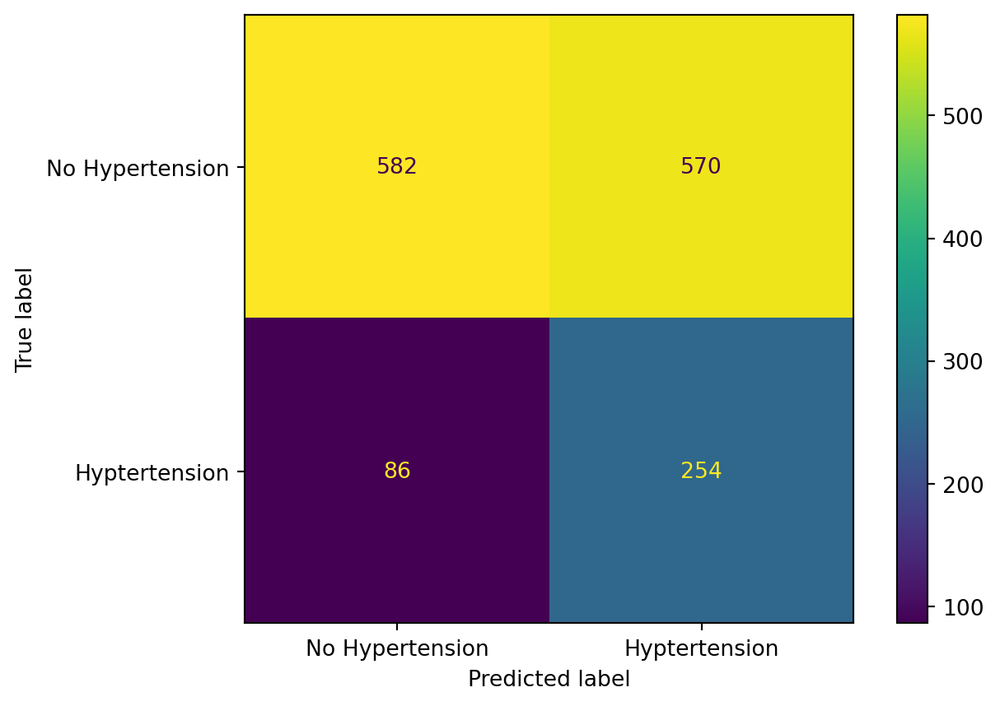
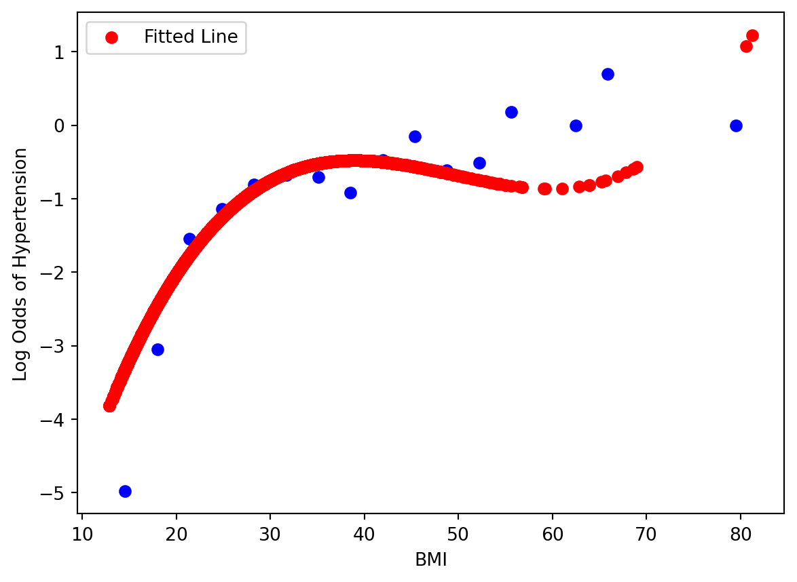
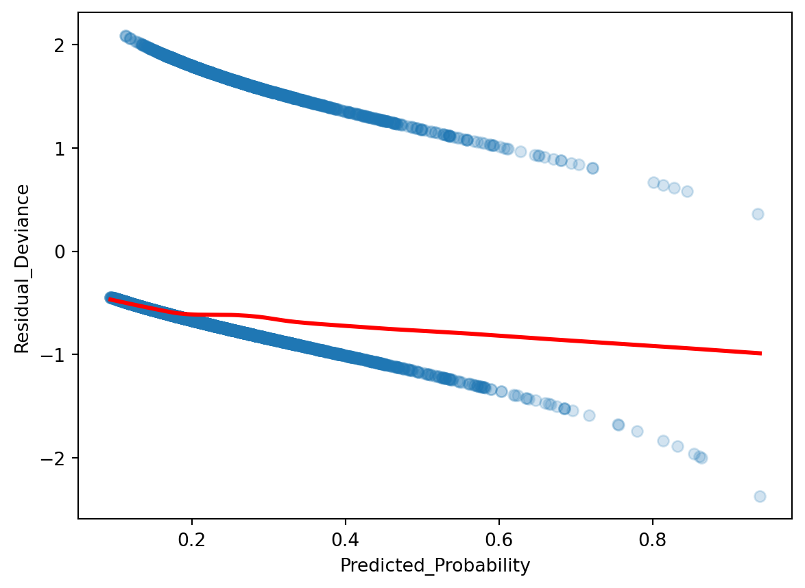

In the third week of class, we will look at classification…
So far, we have looked at making predictions in which the outcome is a continous value. Today, we will look at classification, in which our outcome is a categorical value. We first start with binary classification, in which there is only two possible outcomes, usually defined by True or False values. However, for many classification models, they predict the probability of whether an event happens or not, on a continuous scale from 0 to 1. Then, given the predicted probability, we draw a boundary to classify the outcome as True or False values.
Using the same data as before, we define someone is at risk for \(Hypertension\) if their diastolic pressure is greater than 80 or their systolic pressure is greater than 130. Our goal is to classify whether someone is at high risk for \(Hypertension\).
Let’s look at the distribution of Hypertension vs. No Hypertension:
import pandas as pdimport seaborn as snsimport numpy as npfrom sklearn.model_selection import train_test_splitimport matplotlib.pyplot as pltfrom formulaic import model_matrixfrom sklearn import linear_modelfrom sklearn.linear_model import LogisticRegression, LinearRegressionfrom sklearn.metrics import mean_squared_error, log_loss, accuracy_score, confusion_matrix, ConfusionMatrixDisplaynhanes = pd.read_csv("classroom_data/NHANES.csv")nhanes.drop_duplicates(inplace=True)nhanes['Hypertension'] = (nhanes['BPDiaAve'] >80) | (nhanes['BPSysAve'] >130)nhanes['Hypertension2'] = nhanes['Hypertension'].replace({True: "Hypertension", False: "No Hypertension"})plt.clf()ax = sns.histplot(x ="Hypertension2", data = nhanes)plt.show()

We see that there is a lot more data for the No Hypertension group (88%) compared Hypertension group (22%), so this could be a potential class imbalance in our modeling. We will revisit the consequence of class imbalance later today.
We then split our data in training and testing, as usual:
Great, there seems to be an association. However, recall that our classification model is going to be making predictions of probability on a continuous scale of 0 to 1 before we classify it into two categories. Therefore, it makes sense to examine the relationship between BMI and empirical Hypertension probability in our data exploration. To do so, we will need to bin our data by small chunks of BMI values and calculate the empirical Hypertension probability for that bin. We plot the midpoint binned BMI value vs. empirical Hypertension probability for 20 bins:
nhanes_train['bins'] = pd.cut(nhanes_train['BMI'], bins=20) nhanes_train_binned = nhanes_train.groupby('bins')['Hypertension'].agg(['sum', 'count']).reset_index()nhanes_train_binned['p'] = nhanes_train_binned['sum'] / nhanes_train_binned['count']nhanes_train_binned['log_odds'] = np.log(nhanes_train_binned['p'] / (1- nhanes_train_binned['p']))nhanes_train_binned['bin_midpoint'] = nhanes_train_binned['bins'].apply(lambda x: x.mid)nhanes_train_binned = nhanes_train_binned.replace([np.inf, -np.inf], np.nan)nhanes_train_binned = nhanes_train_binned.dropna()#predictor vs probabilityplt.clf()plt.scatter(nhanes_train_binned['bin_midpoint'], nhanes_train_binned['p'], color='blue')plt.xlabel('BMI - Binned Midpoint')plt.ylabel('Proportion of people with Hypertension')plt.ylim(0, 1)plt.grid(True)plt.show()
/tmp/ipykernel_140/4066196581.py:4: FutureWarning: The default of observed=False is deprecated and will be changed to True in a future version of pandas. Pass observed=False to retain current behavior or observed=True to adopt the future default and silence this warning.
nhanes_train_binned = nhanes_train.groupby('bins')['Hypertension'].agg(['sum', 'count']).reset_index()
/usr/local/lib/python3.10/dist-packages/pandas/core/arraylike.py:399: RuntimeWarning: divide by zero encountered in log
result = getattr(ufunc, method)(*inputs, **kwargs)

Great, looks like we have a relationship, but it doesn’t encompass the full spectrum of probabilities.
4.1 Logistic Regression
Now, let’s build the model \(P(Hypertension) = f(BMI)\) to make a prediction of \(Hyptertension\) given \(BMI\). Notice that the left hand side of the equation is the probability of having \(Hypertension\), indicated by the \(P()\) function.
4.1.1 Logistic Transformation
Our usual Linear Regression model
\[P(Hypertension)=\beta_0+\beta_1 \cdot BMI\]
does not give us outputs between 0 and 1. To deal with this, we perform the Logistic Transformation (also known as the Sigmoid Transformation):
This forces the right hand side of the equation to be between 0 and 1, which is at the scale of probability. The relationship between the X and Y axis is not going to be a straight line, but rather a non-linear, “S-shaped” one. Let’s fit this model and look at the model visually to understand.
y_train, X_train = model_matrix("Hypertension ~ BMI", nhanes_train)y_test, X_test = model_matrix("Hypertension ~ BMI", nhanes_test)logit_model = LogisticRegression().fit(X_train, y_train)plt.clf()plt.scatter(X_train.BMI, logit_model.predict_proba(X_train)[:, 1], color="red", label="Fitted Line")plt.scatter(nhanes_train_binned['bin_midpoint'], nhanes_train_binned['p'], color='blue')plt.xlabel('BMI')plt.ylabel('Proportion of people with Hypertension')plt.ylim(0, 1)plt.legend()plt.show()
/usr/local/lib/python3.10/dist-packages/sklearn/utils/validation.py:1406: DataConversionWarning: A column-vector y was passed when a 1d array was expected. Please change the shape of y to (n_samples, ), for example using ravel().
y = column_or_1d(y, warn=True)

This shows that the logistic model was able to model some of the relationship between \(BMI\) and \(P(Hypertension)\), but the model predicts much higher \(P(Hypertension)\) at high values of \(BMI\).
Showing goodness of fit via this plot is rather difficult, because it is hard to figure out visually when the data can fall on a logistic S-curve - one can imagine a red line stretched out more, etc. If we move the equation around so that the right hand side is linear:
The left hand side of the equation is called the Log-Odds. A Log-Odds of 0 indicate a 50:50 probability, positive values indicate a higher than 50% probability, and negative values indicate a lower than 50% probability.
Now we see why exactly our logistic regression model was limited to fit the relationship between predictor and response, as we have reformulated the problem closer to a linear regression problem. We could improve the model by using polynomial terms.
When working with multiple predictors, these plots can be a starting point to select for predictors, but in the multi-dimensional setting these visualizations are not sufficient to determine the model fit. We will need to look at residual plots in the diagnosis, which we will revisit later.
4.1.2 Model Evaluation
Remember that we still need to get from probability to classification. We will set a reasonable, interpretable cutoff of 50%: if the probability of having Hypertension is >=50%, then classify that person having Hypertension. Otherwise, they do not have Hypertension. This cutoff called the Decision Boundary.
As an aside, we can also evaluate the model based just on the probability it predicted, and it actually contains more information than if we had set our decision boundary and classified our response as a True/False dichotomy. However, metrics of evaluation on probabilities, namely Cross Entropy and Brier Scores, are harder to interpret, and are less commonly reported in biomedical research. We still stick with evaluation metrics for classification for this course.
Given this decision boundary, let’s examine evaluate the model on the test set, and look at its accuracy rate:
However, we need to be mindful of the class imbalance we saw in the dataset at the beginning of the lesson. Recall we roughly have 88% of our data as No Hypertension. If we have a classifier that always predicted No Hypertension, then we achieve a 88% accuracy rate, but this model is not particularly novel and it raises questions of whether our model of 76% accuracy is novel.
Well, break down the accuracy by the Hypertension events and No Hypertension events:
Our Sensitivity (accuracy of Hypertension events) is defined as: \(\frac{TruePositives}{TruePostives+FalseNegatives}\), which is 15/(15+325) = 4%
Our Specificity (accuracy of No Hypertension events) is defined as: \(\frac{TrueNegatives}{TrueNegatives+FalsePositives}\), which is 1128/(1128+24) = 98%.
Therefore, we do a pretty terrible job of predicting the Hypertension cases!
We can describe the detailed numbers via a table called the Confusion Matrix:
cm = confusion_matrix(y_test, logit_model.predict(X_test))disp = ConfusionMatrixDisplay(confusion_matrix=cm, display_labels=["No Hypertension", "Hyptertension"])disp.plot()plt.show()
The top left hand corner is the number of True Negatives (1128), the top right hand corner is the number of False Positives (24), the bottom left corner is the number of False Negatives (325), and the bottom right corner is the number of True Positives (15).
What happened exactly? Let’s look back at the Training Data: it seems that from the plots that we are making predictions of Hypertension for BMI of 50 or more. However, there are so few people with such a high BMI that even if most of those folks have Hypertension, the model missed most of the folks with Hypertension in the 20-40 BMI range. This range wasn’t high enough for our decision boundary of 50% probability, so we missed out most of our Hypertension people.
What can we do? There are lot’s of things we can change about the model, but let’s tinker around with the decision boundary for a moment. We can change the decision boundary to be lower, which will improve our sensitivity at the expense of our specificity, and vice versa if we change the decision boundary to be higher. What if we set the new decision boundary to be .2?
new_pred = [1if x >=.2else0for x in logit_model.predict_proba(X_test)[:, 1]]cm = confusion_matrix(y_test, new_pred)disp = ConfusionMatrixDisplay(confusion_matrix=cm, display_labels=["No Hypertension", "Hyptertension"])disp.plot()plt.show()

Our Sensitivity (accuracy of Hypertension events) is defined as: \(\frac{TP}{TP+FN}\), which is 254/(254+86) = 74%
Our Specificity (accuracy of No Hypertension events) is defined as: \(\frac{TN}{TN+FP}\), which is 582/(582+570) = 51%.
We have improved our sensitivity at the cost of our specificity! You can explore the range of tradeoffs from the decision boundary cutoff using the Receiver Operating Characteristic (ROC) curve in the Appendix.
Let’s pause here for model evaluation for now, and look back at the assumptions of logistic regression, as we did for linear regression.
4.1.3 Another model
What happens if we refit the model with a 3rd degree polynomial? Let’s see what it looks like at the Log-Odds scale. Is it better than the linear form?
/usr/local/lib/python3.10/dist-packages/sklearn/linear_model/_logistic.py:473: ConvergenceWarning: lbfgs failed to converge after 100 iteration(s) (status=1):
STOP: TOTAL NO. of ITERATIONS REACHED LIMIT
Increase the number of iterations to improve the convergence (max_iter=100).
You might also want to scale the data as shown in:
https://scikit-learn.org/stable/modules/preprocessing.html
Please also refer to the documentation for alternative solver options:
https://scikit-learn.org/stable/modules/linear_model.html#logistic-regression
n_iter_i = _check_optimize_result(

Is it any better? Let’s see its performance on the test set:
where the left hand side is called the log odds or the logit. From exploratory data analysis, we need the log odds of the response to be in linear relationship with each predictor in logistic regression. We examined that in our example today. When we have many predictors, this visualization is going to not work.
Recall back in linear regression, we can check the linearity between response and multiple predictors by calculating the residual and compare it to the predicted response. There is a similar analysis in logistic regression: residualdeviance. We plot the residual deviance against the predicted probability. Note that we have to use the statsmodels package here, as its model calculates residual deviance for us, whereas sklearn does not.
Optimization terminated successfully.
Current function value: 0.515188
Iterations 6

Ideally the residual deviance should be centered around 0 for any predictor probability value, so what we see is not ideal! If working with multiple predictors, we can break it down by plotting predictor value vs. residual devaince.
There are three other assumptions in logistic regression, and they are identical as linear regression’s assumptions: predictors are not collinear, no outliers, and the number of predictors is less than the number of samples.
4.3 Appendix: Inference for Logistic Regression
Similar to linear regression, we can interpret the parameters for logistic regression. We focus on the log-odds form of the model to help with interpretation:
\(\beta_0\) is a parameter describing the log-odds of having \(Hypertension\), and \(\beta_1\) is a parameter describing the increase of log odds of having \(Hyptertension\) per unit change of \(BMI\). Recall that a Log-Odds of 0 indicate a 50:50 probability, positive values indicate a higher than 50% probability, and negative values indicate a lower than 50% probability. We can apply hypothesis testing to all of our parameters.
To examine the parameters carefully for hypothesis testing, we have to use the statsmodels package instead of sklearn.
Optimization terminated successfully.
Current function value: 0.515188
Iterations 6
Logit Regression Results
Dep. Variable:
Hypertension
No. Observations:
6013
Model:
Logit
Df Residuals:
6011
Method:
MLE
Df Model:
1
Date:
Fri, 17 Apr 2026
Pseudo R-squ.:
0.04995
Time:
23:02:15
Log-Likelihood:
-3097.8
converged:
True
LL-Null:
-3260.7
Covariance Type:
nonrobust
LLR p-value:
8.088e-73
coef
std err
z
P>|z|
[0.025
0.975]
Intercept
-3.2097
0.123
-26.034
0.000
-3.451
-2.968
BMI
0.0733
0.004
17.385
0.000
0.065
0.082
4.4 Appendix: ROC Curve
If we want to explore how our decision boundary impacts our sensitivity and specificity of our classifier, the Receiver Operating Characteristic (ROC) curve is a nice visualization. The plot explores a large range of decision boundary cutoffs, and calculates the corresponding sensitivity (true positive rate) and 1 - sensitivity (false positive rate) for each cutoff.
Below is an example ROC curve showing good, worse, and bad performance. If the classifier guesses with a 50% probability, it will fall on the “chance line”. The closer the curve hugs the top left corner, the better. One can also summarize this ROC curve by calculating the Area Under the Curve, with the highest being 1, if the ROC curve creates a perfect square, and the lowest being .5 via area created by the “chance line”.